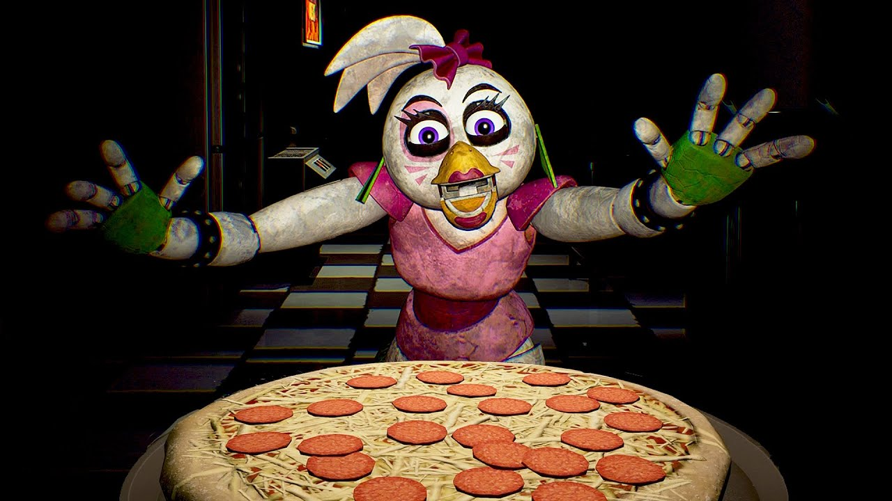

Freddy Fazbear's Famous Pizza!

"Who wants pizza?"
No one can resist the temptation of the best pizza in showbiz! Not even Chica!
When a full, fun-filled day at the pizzaplex has taken a toll on you and the kids, just prepare everyone's favorite pizza from home!
Ingredients
- 2 & 1/2 cups of flour
- 1 teaspoon sugar
- 1 tablespoon of yeast
- 1 cup of water at 120 degrees
- 1 tablespoon of oil
- Cheese! LOTS OF CHEESE!
- Pepperonis
- 1/4 cup of tomato sauce
Directions:
- Mix first 4 ingredients in a large bowl.
- Mix water and oil; add to flour mixture.
- Turn onto floured surface; knead for 2 minutes.
- Place in a greased bowl; turning to grease top.
- Cover and let rise for 20 minutes.
- Punch down; place on 12in. greased pizza pan.
- Pat into a circle.
- Topping; Mix sauce, cheese and pepperonis and spread over crust.
- Bake at 400 degrees for 20 minutes or until light brown.